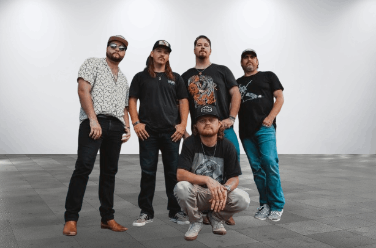

Treaty Oak Revival
Years Active: 2018–present
Genre/s: Country rock, Southern rock
Label/s: TOR
Members: Sam Canty, Lance Vanley, Jeremiah Vanley, Cody Holloway, Dakota Hernandez
Treaty Oak Revival is an American southern rock and country music band based in Odessa, Texas. They have released three studio albums and five singles since 2018.
Treaty Oak Revival formed as a cover band in Odessa, Texas in 2018, originally consisted of lead singer Sam Canty, guitarists Lance Vanley and Jeremiah Vanley, bassist Andrew Carey and drummer Cody Holloway. Lance Vanley and Jeremiah Vanley are uncle and nephew.
The band is named after the Treaty Oak in Austin, Texas. The tree is the last of 14 oak trees that were considered a sacred meeting place by the Comanche and Tonkawa. They released their debut single in 2020 No Vacancy before releasing their debut studio album with the same name in 2021 and gained popularity. Their second studio album Have a Nice Day was released in November 2023. The album debuted at number 174 on the Billboard 200.
In 2024 their single Missed Call was awarded a gold record.
In 2024 the band accompanied Koe Wetzel on his Damn Near Normal Tour. On February 6 of the same year the band played the Grand Ole Opry, accompanied by Rhonda Vincent and Henry Cho.
In 2025 the band released "Bad State of Mind" which was noted for its midwest emo riff and became the band's highest charting song, reaching number 1 on Billboard's Bubbling Under chart. On April 21, 2025 the band performed "Bad State of Mind" on Jimmy Kimmel Live. In May of that year Treaty Oak Revival released The Talco Tapes, an acoustic album consisting of eight previously recorded songs and a cover of "Name" by Goo Goo Dolls. On June 29, 2025, bassist Andrew Carey departed from the band, citing physical and mental strain stemming from touring.
In October 2025 the band made their debut international performance at the Hordern Pavilion, Sydney, Australia, as the first part of their four-stop ‘Treaty Oak Revival Takes Australia’ headline tour. In November of that year the band released West Texas Degenerate, which reached number 21 on the Billboard 200, and number 1 on Billboard's Top Rock Albums and Americana/Folk Albums charts.